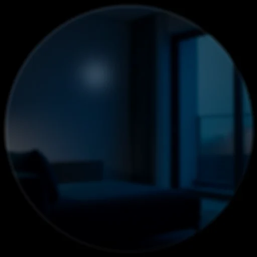
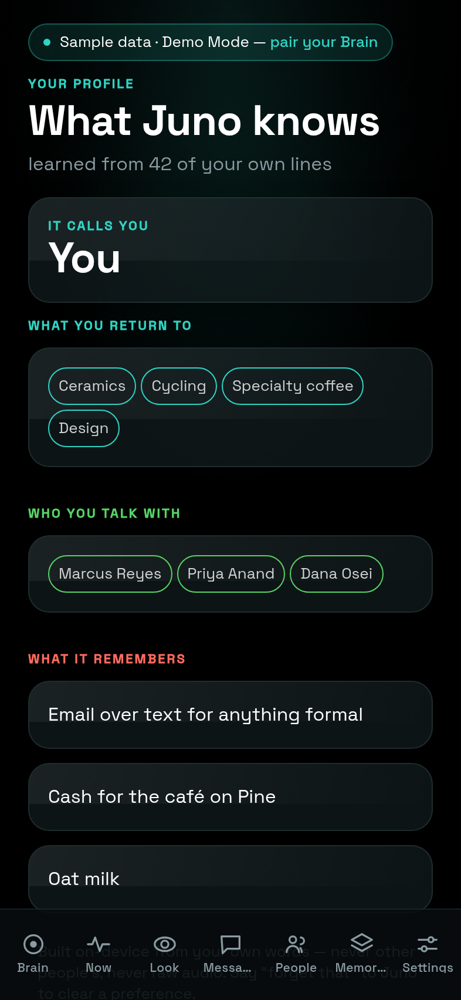

Juno
Juno is DreamLayer's voice: the thing you wake, ask, command, and — over
time — the thing that learns how to address you. It lives in the orchestrator
(orchestrator/orchestrator.py, grammar in orchestrator/voice.py and
orchestrator/commands.py, voice and manner in orchestrator/persona.py).
Waking it
Four wake sources, each independently toggleable (set_wake_source, mirrored
by the phone's Settings screen):
- Voice — a leading wake phrase. The grammar accepts hey juno, ok/okay juno, juno, hey dreamlayer, ok dreamlayer, and dreamlayer, only as the first token of the line — "the juno said so" mid-sentence does not wake it. Seam: the on-device ASR and acoustic wake-word spotting that produce the text.
- Tap, gaze, raise — hands-free wakes via
activate(source). Seam: the physical tap/gaze/raise signals.
On wake, three kinds of feedback fire, each independently toggleable
(set_wake_feedback): a visual ListeningCard ring, the wake earcon,
and a tick haptic.

Continuous conversation
A wake opens a 20-second session (juno_session_s). Inside it,
follow-ups need no wake word — hear(text) treats any line as addressed to
Juno, and each command extends the window. Outside the window,
non-addressed lines are ignored (they still flow to captions and the ledger
if those are on).
What "Hey Juno" can do
ask_juno dispatches in strict order: an explicit teach first, then a
device command, then a knowledge intent.
1. Teaches — "call me Sam"
UserModel.learn catches explicit instruction before anything else:
- Names: "call me Sam", "my name is Sam", "name's Sam" — pronouns and digits are rejected as names.
- Preferences: "I prefer aisle seats", "remember that I ...", "note that I ...", "I always / usually / hate / avoid / can't stand ..." — normalized to first person, capped at 120 characters, at most 40 kept.
A teach is confirmed in Juno's own voice ("Good to know you, Sam." / "Got it — I'll remember that.") and pushed to the paired Brain immediately.
2. Device commands
Parsed by a closed grammar (commands.py); each returns an
JunoReplyCard of kind action with a themed confirmation:
| Say | Command | Effect | Confirmation |
|---|---|---|---|
| "focus mode" / "turn off focus" | focus |
set_focus(25) / clear_focus() |
"Focus on — the world's turned down." / "Focus off. I'll speak up again." |
| "go incognito" / "off the record" / "go dark" | incognito |
set_incognito |
"Incognito. Nothing's being kept." / "Back on the record." |
| "captions on/off" / "subtitles" | captions |
set_captions |
"Captions on." / "Captions off." |
| "keep watch" / "proactive off" | proactive |
set_attention + set_anticipation |
"I'll keep watch." / "I'll stay quiet unless you ask." |
| "cloud on/off" | cloud |
use_cloud |
"Cloud on — I can reach further now." / "Cloud off. Everything stays with you." |
| "rewind" / "replay my day" | rewind |
rewind_scrub() — the scrub opens on glass |
"Rewinding your day." |
| "what's my rank / level / saga" | saga |
confirmation; the phone completes it against the Brain | "Here's how far you've come." |
| "sync my calendar / contacts / reminders" | sync |
confirmation; executed on the Brain | "Syncing your calendar." |
| "remind me to ..." / "add an event ..." | remind |
confirmation; captured toward the agenda | "Noted — call the plumber." |
Off-cues (off, stop, end, disable, exit, cancel, pause, hide, quiet) flip any toggleable command the other way.
3. Timers, intervals, and the clock — no Brain required
Say "set a timer for five minutes", "interval timer, 30 on, 15 off, 8
rounds", "show a clock", or "what time is it" and Juno builds the
behavior on the spot: each becomes a budget-verified Reality Compiler
figment deployed straight to the glasses' stage. Two execution paths, same
grammar (voice.py: _parse_timer_clock): with a paired Brain the figment is
compiled there (and pruned from the vault afterward — timers never clutter
the Repertoire); with no Brain at all, the hub compiles and deploys it
directly over BLE — no vault, no HTTP, fully offline. Hold the button to
stop early; "cancel the timer" works too. Deliberately ephemeral: nothing
persists. Veil-gated. (Tests: test_native_timers.py,
test_hub_offline.py.)
4. People, spoken
The social memory is voice-first (voice.py; full detail in
Perception and memory):
| Say | Intent | Effect |
|---|---|---|
| "remember Maya's into rock climbing" / "note that she works at Google" | note_person |
a note on that person (by name, or whoever you looked at in the last 90 s) |
| "this is my brother Dan" / "meet my colleague Sarah, she runs marketing" | meet_person |
keeps them on the spot — face if one is in view, relationship and note attached |
| "Marcus owes me $20" / "I owe Dana lunch" | debt |
a debt line on their card |
| "Marcus paid me back" / "we're even with Dana" | debt_settle |
clears it — "Squared up with Marcus." |
All veil-gated ("Not while you're incognito."), all confirmed in-voice, all
mirrored to the phone's People tab. The same intents work typed from the
phone through POST /dreamlayer/voice, so the pocket and the glasses share
one grammar.
5. Scholar, spoken
"What's the answer", "how do I fill this out", "explain this" route to the Scholar lens — and saying one arms the next look for 6 seconds, so "explain this" followed by a glance at the page goes straight to plain words with no chooser.
6. Things, stashed and found
Tell Juno where you left something, then ask later — answered entirely from your own Waypath anchors, no Brain required:
| Say | Intent | What happens |
|---|---|---|
| "I left my bike at the north rack" / "my car's in the garage" / "I'm parked on level 3" | stash |
drops a Waypath anchor — "Got it — your bike is at the north rack." |
| "where's my bike?" / "where did I park?" | locate |
answers from that anchor and draws the direction/place card on the glass |
The stash grammar (voice.py: _parse_stash) is deliberately past-tense
and thing-shaped: only left / put / stashed / dropped / stowed / set
(plus the parked forms) parse, and person, event, time, and idiom subjects
are refused — so "I'm leaving at nine" and "my mom is in the hospital"
degrade safely to a plain ask instead of becoming a bogus anchor. Both
halves respect the Veil: incognito refuses the write ("Not while you're
incognito.") and holds the on-glass answer too. A thing you never stashed
gets the honest miss: "I don't have a spot saved for your bike yet."
More on the anchors themselves in
Perception and memory.
7. Knowledge intents
Anything else runs through parse_intent (voice.py) and handle_voice —
and since the wiring pass, every one of these completes end to end instead
of returning a bare intent:
| Intent | Example | What happens |
|---|---|---|
recall |
"what did Marcus say he needs?" | routed through the brain (ask_brain) |
reply |
"reply to Priya saying on my way" | the Brain stages the reply — drafting a line if you gave none — and the send still requires explicit approval |
brief |
"brief me" / "what's my day" | pulls the morning brief |
missed |
"what did I miss?" | the Brain counts genuinely missed texts and emails and says so ("You missed 2 texts and 1 email.") |
ask |
anything else | the tiered brain — device, then Mac mini, then cloud if enabled |
Answers come back framed by the persona; when nothing is known Juno says so plainly: "I don't have that one — want me to look further?" — it never invents.
The persona
persona.py fixes the voice: calm, perceptive, warm; one or two plain
sentences; never overclaiming ("never invent facts; if you're not sure, say
so" is written into the persona prompt used for LLM-backed replies). The
greeting adapts to what it knows: "I'm here, Sam." once you have told it your
name — juno_greeting() uses UserModel.address().
How it learns you — the user model
orchestrator/user_model.py builds a deliberately small, private profile,
entirely on-device:
- What it keeps: the topics you return to (keyword counts from your own lines only — stopword-filtered, capped at 300 with pruning), who you talk with most (name counts), your explicit preferences (up to 40), what to call you, and a running observation count.
- What it never keeps: raw audio, other people's words as your interests,
anything while the Privacy Veil is down (learning rides on
ingest_captionandask_juno, both veil-gated). - Persistence: a single JSON file,
usermodel.json, beside the memory vault; purely in-memory for ephemeral sessions.
The hub-to-Brain profile bridge
publish_profile POSTs the snapshot to the paired Brain
(POST /dreamlayer/profile) — debounced to every 10 observations, immediate
on an explicit teach. The Brain mirrors it (profile.json,
GET /dreamlayer/profile) and never authors it; it also caps what it will
store (name, up to 12 interests, 12 people, 40 preferences, the observation
count). The phone renders the mirror on the Profile screen — "What Juno
knows about you" — so the model is always inspectable:

The live phone screen. With no Brain paired it shows its empty state; the profile fills as Juno observes and as you teach it.